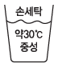

세탁기능사 (2013-07-21 기출문제)
1과목: 세정이론
1. 비누의 장점으로 틀린 것은?
- 산성용액에서도 사용할 수 있다.
- 세탁효과가 우수하다.
- 세탁한 직물의 촉감이 양호하다.
- 거품이 잘 생기고 헹굴 때에는 거품이 사라진다.
(정답률: 91%)

2. 오점의 성분 중 충해의 원인이 되는 것은?
- 염류
- 무기물
- 요소
- 단백질
(정답률: 89%)
3. 다음 중 표백가공의 설명으로 틀린 것은?
- 표백제는 산화표백제와 환원표백제로 나눈다.
- 산화표백제는 동물성 섬유에 주로 사용한다.
- 표백은 유색물질을 화학적으로 파괴시켜 색소를 제거하는 것이다.
- 착용과 세탁에서 생기는 황변 또는 염색물의 오염상태를 제거한다.
(정답률: 58%)
4. 흡착에 의한 재오염에 해당하지 않는 것은?
- 정전기
- 점착
- 물의 적심
- 염착
(정답률: 79%)
5. 세정액의 청정장치 방식 중 여과지와 흡착제가 별도로 되어 있고 여과 면적이 넓고 흡착제의 양이 많아 오래 사용하는 것은?
- 청정통식
- 카트리지식
- 증류식
- 필터식
(정답률: 73%)
6. 피복의 오염 부착 상태 중 마찰이나 물리적 작용으로 직접 오염이 부착되거나 중력 등에 의하여 오염입자가 침전하여 피복의 표면에 부착되는 것은?
- 유지결합에 의한 부착
- 정전기에 의한 부착
- 화학결합에 의한 부착
- 기계적 부착
(정답률: 65%)
7. 계면활성제의 기본적인 성질과 직접 관계하는 작용이 아닌 것은?
- 기포작용
- 침투작용
- 분산작용
- 살균작용
(정답률: 65%)
8. 다음 중 산화표백제가 아닌 것은?
- 아황산나트륨
- 차아염소산나트륨
- 과산화수소
- 과탄산나트륨
(정답률: 80%)
9. 용제 공급펌프의 성능에 대한 설명 중 틀린 것은?
- 액심도 3까지 60초 이상 요하는 펌프는 불량이다.
- 액심도 3까지 45~60초를 요하는 펌프는 한계이다.
- 액심도 3까지 60초까지는 이상이 없다.
- 액심도 3까지 45초 이내는 양호하다.
(정답률: 67%)
10. 보일러에서 0℃의 물 1ml를 1℃ 올리는데 필요한 열량은?
- 0kcal
- 1kcal
- 2kcal
- 5kcal
(정답률: 89%)
11. 다음 중 세정률이 가장 높은 섬유는?
- 양모
- 아세테이트
- 견
- 비닐론
(정답률: 87%)
12. 고객으로부터 세탁물을 접수 받을 때 점검 할 사항이 아닌 것은?
- 고객으로부터 얼룩의 종류와 부착시기 등을 묻고 접수증에 기록한다.
- 의류의 형태 변화 및 탈색, 변색, 클리닝 대상여부를 판별한다.
- 기호나 성명 등을 마킹종이에 기입해서 일일이 세탁물에 부착하는 것은 시간 낭비이다.
- 카운터에서 고객과 함께 진단처방한 주의점은 처방지에 기록한다.
(정답률: 72%)
13. 퍼클로로에틸렌에 대한 설명 중 틀린 것은?
- 화재 폭발의 위험이 없다.
- 끓는점이 121℃로 낮아서 증류 정제가 쉽다.
- 세탁시간이 짧아서 피혁이나 견직물 클리닝에 좋다.
- 독성이 커서 밀폐장치가 필요하다.
(정답률: 51%)
14. 직물에 유연처리하여 정전기를 방지하는 가공은?
- 발수가공
- 방수가공
- 방오가공
- 대전방지가공
(정답률: 88%)
15. 다음 중 수용성 오점이 아닌 것은?
- 그리스
- 커피
- 겨자
- 간장
(정답률: 88%)
16. 세탁물의 진단 중 주요 내용이 아닌 것은?
- 특수품의 진단
- 고객 주문의 타당성 진단
- 요금의 진단
- 광고의 진단
(정답률: 77%)
17. 계면활성제의 종류 중 대전방지제로 가장 많이 사용하는 것은?
- 음이온계 계면활성제
- 양성계 계면활성제
- 비온계 계면활성제
- 양이온계 계면활성제
(정답률: 81%)
18. 용제의 청정화가 불충분하여 재오염되었더라도 깨끗한 용제로 헹구면 제거될 수 있는 것은?
- 점착
- 흡착
- 염착
- 부착
(정답률: 58%)
19. 형광증백제에 대한 설명 중 틀린 것은?
- 흰색 의류를 더욱 희고 밝게 보이게 한다.
- 미량(0.1% 이하)으로 증백효과를 기대할 수 없어 0.5% 이상 사용해야 한다.
- 증백제 처리를 잘못했을 때 바람직하지 못한 녹색을 띄는 경우가 있다.
- 내일광성이나 내염소성에 비교적 취약한 편이다.
(정답률: 69%)
20. 세정액의 청정장치 방식이 아닌 것은?
- 필터식
- 카트리지식
- 청정통식
- 텀블러식
(정답률: 84%)
2과목: 기술관리
21. 세탁물의 상해 예방에 대한 설명 중 옳은 것은?
- 용제 중의 수분을 많게 한다.
- 원심탈수기 작동 시 뚜껑을 덮지 않는다.
- 손상되기 쉬운 제품은 망에 넣어 처리한다.
- 건조기 온도를 고온으로 하여 빨리 처리한다.
(정답률: 66%)
22. 론드리 공정 중 표백온도로 가장 적합한 것은?
- 20~30℃
- 40~50℃
- 60~70℃
- 80~90℃
(정답률: 68%)
23. 얼룩의 판별 수단으로 옳은 것은?
- 외관 : 사람의 후각, 촉각에 의하여 판별한다.
- pH시험지 : 얼룩부분을 물로 분무하여 친수성, 친유성, 얼룩 여부를 조사한다.
- 분무 : 산성, 알칼리성 여부를 조사한다.
- 현 미 경 : 미 립 자 는 생물현미경(300~600배), 보통의 입자는 실체현미경(5~60배)으로 관찰한다.
(정답률: 54%)
24. 다림질 방법에 대한 설명 중 틀린 것은?
- 모직물은 위에 덧헝겊을 대고 물을 뿌려 다린다.
- 혼방물은 내열성이 낮은 섬유를 기준하여 다린다.
- 풀 먹인 직물을 너무 고온처리하면 황변이 될 수 있다.
- 광택을 필요로 하는 옷은 다리미판이 부드러운 것을 사용한다.
(정답률: 73%)
25. 다음 중 의복의 기능에 대한 설명으로 틀린 것은?
- 위생상의 성능이 있다.
- 실용적인 성능이 있다.
- 상품화 성능이 있다.
- 감각적 성능이 있다.
(정답률: 73%)
26. 웨트클리닝용 세제로 가장 적합한 것은?
- 알칼리성 세제
- 경성세제
- 연성세제
- 중성세제
(정답률: 72%)
27. 드라이클리닝 기계 중 합성세제를 사용하며 세정, 탈액, 건조까지 연속적으로 처리되는 것은?
- 개방형 세정기
- 반개방형 세정기
- 준밀폐형 세정기
- 밀폐형 세정기
(정답률: 75%)
28. 다음 중 세탁에 적정한 알칼리성 농도로 가장 적합한 pH는?
- pH 7
- pH 9
- pH 11
- pH 14
(정답률: 86%)
29. 다음 중 웨트클리닝 대상품이 아닌 것은?
- 합성수지 제품
- 고무를 입힌 제품
- 수지안료 가공 제품
- 아세테이트 제품
(정답률: 69%)
30. 론드리에 대한 설명으로 옳은 것은?
- 수질오염방지를 사용하며 가볍게 손세탁을 하는 작업이다.
- 중성세제를 사용하며 가볍게 손세탁을 하는 작업이다.
- 휘발성 유기용제로 모, 견 등을 클리닝하는 작업이다.
- 알칼리제, 비누를 사용하여 온수에서 와셔로 세탁하는 가장 세정작용이 강한 작업이다.
(정답률: 79%)
31. 다음 중 얼룩빼기 기계는 무엇인가?
- 주걱
- 제트스포트
- 받침판
- 분무기
(정답률: 76%)
32. 견직물 한복의 세탁에 대한 설명 중 틀린 것은?
- 물세탁만 하면 변색, 수축이 된다.
- 기름세탁만 하면 수용성 오점이 제거되지 않고 세정효율이 낮다.
- 발수법을 이용한 기름세탁 후 물세탁 방법이 바람직하다.
- 다른 세탁물과 혼합해서 세탁하면 경제적이고 간편하다.
(정답률: 67%)
33. 론드리 공정 중 건조에 대한 설명으로 틀린 것은?
- 수분을 완전히 제거하고 말린다.
- 살균, 소독 작용이 있다.
- 두꺼운 옷감일 때는 그냥 말려 마무리를 한다.
- 화학섬유의 경우 수축, 황변하기 쉬우므로 60℃ 이상에서 건조시킨다.
(정답률: 68%)
34. 다음 중 화학적 얼룩빼기 방법이 아닌 것은?
- 알칼리법
- 분산법
- 표백제법
- 효소법
(정답률: 70%)
35. 다림질의 3대 요소에 해당하지 않는 것은?
- 온도
- 진공
- 압력
- 수분
(정답률: 80%)
36. 다음 중 실로 만들어진 피륙이 아닌 것은?
- 브레이드
- 레이스
- 부직포
- 편성물
(정답률: 76%)
37. 폴리에스테르(Polyester) 섬유의 단점으로 틀린 것은?
- 내약품성이 좋지 않다.
- 염료를 흡착할 만한 활성기가 없어 염색이 어렵다.
- 정전기를 잘 발생한다.
- 흡습성이 낮다.
(정답률: 46%)
38. 아미드 결합(-CONH-)에 의해서 단량체가 연결된 긴 사슬모양 고분자를 이룬 합성섬유는?
- 폴리에스테르
- 나일론
- 아크릴
- 비닐론
(정답률: 49%)
39. 셀룰로스 섬유의 염색에 적합하지 않은 염료는?
- 직접염료
- 분산염료
- 반응성염료
- 배트염료
(정답률: 55%)
40. 편성물의 특성으로 틀린 것은?
- 신축성이 좋고 구김이 생기지 않는다.
- 함기량이 많아 가볍고 따뜻하다.
- 세탁 후 다림질이 크게 필요없다.
- 조직이 튼튼하고 간단한 조직이다.
(정답률: 63%)
3과목: 클리닝대상품
41. 나일론 섬유의 특성 중 틀린 것은?
- 강도가 크고 마찰에 대한 저항도가 크다.
- 비중은 1.14로 양모섬유에 비해 가볍다.
- 햇빛에 의한 황변이 일어나지 않는다.
- 흡습성이 적어서 빨래가 쉽게 마른다.
(정답률: 70%)
42. 다음 중 내일광성이 가장 좋은 섬유는?
- 나일론
- 폴리에스테르
- 아크릴
- 비닐론
(정답률: 65%)
43. 섬유의 물세탁방법 표시기호에 대한 설명으로 틀린 것은?

- 물의 온도는 30℃를 표준으로 한다.
- 약하게 손세탁할 수 있다.
- 세탁기로 세탁할 수 있다.
- 세제는 중성세제를 사용한다.
(정답률: 85%)
44. 다음 중 산에 가장 약한 섬유는?
- 면
- 양모
- 견
- 폴리에스테르
(정답률: 64%)
45. 재생셀룰로스 섬유로만 나열된 것은?
- 비스코스레이온, 폴리노직레이온, 구리 암모늄레이온
- 폴리에틸렌, 폴리프로필렌, 폴리염화비닐
- 아세테이트, 폴리에스테르, 구리암모늄레이온
- 비닐론, 비누화아세테이트, 폴리우레탄
(정답률: 75%)
46. 염료의 장·단점에 대한 설명 중 틀린 것은?
- 견뢰도를 좋게 하기 위해서는 직접염료를 사용해야 견뢰도가 강하다.
- 직접염료는 염색법이 간단하나 색상이 선명하지 않다.
- 산성염료는 색상이 선명하나 견뢰도가 나쁘다.
- 적은 양으로도 진한 색으로 염색이 가능하나 견뢰도가 나쁜 것이 염기성 염료이다.
(정답률: 44%)
47. 가죽의 특성이 아닌 것은?
- 내열성이 증대한다.
- 유연성과 탄력성이 좋다.
- 물을 짜내면 물이 잘 빠져 나오지 않는다.
- 산성염료로 염색성이 좋다.
(정답률: 71%)
48. 반응성 염료로 염색이 불가능한 것은?
- 아세테이트
- 면
- 나일론
- 마
(정답률: 62%)
49. 다음 중 일광견뢰도가 가장 양호한 등급은?
- 1급
- 4급
- 5급
- 8급
(정답률: 85%)
50. 다음 중 스테이플(Staple) 섬유가 아닌 것은?
- 견
- 면
- 양모
- 마
(정답률: 76%)
51. 다음 중 면섬유의 특성으로 틀린 것은?
- 현미경으로 관찰하면 측면은 리본모양으로 되어 있고 꼬임이 있다.
- 현미경으로 관찰하면 중앙에는 중공이 있다.
- 수분을 흡수하면 강도가 증가한다.
- 산에는 다소 강하나 알칼리에는 약한 편이다.
(정답률: 78%)
52. 아세테이트 섬유의 특성으로 옳은 것은?
- 흡습성이 비스코스레이온에 비해서 훨씬 크다.
- 셀룰로스 섬유에 비해 구김이 잘 생긴다.
- 장기간 노출하여도 강도는 변함이 없다.
- 곰팡이에 안전하다.
(정답률: 59%)
53. 다음 중 평직물이 아닌 것은?
- 개버딘
- 광목
- 옥양목
- 포플린
(정답률: 76%)
54. 염색견뢰도에 대한 설명 중 틀린 것은?
- 견뢰도는 염료의 종류에 따라 각각 다르다.
- 견뢰도 판정은 오염 판정 시 사용하는 표준색표와 비교한다.
- 견뢰도의 종류에 관계없이 등급의 수는 모두 같다.
- 염색된 옷이 세탁에 견디는 능력을 세탁견뢰도라 한다.
(정답률: 81%)
55. 합성섬유의 특성으로 틀린 것은?
- 합성섬유는 석유에서 얻어지는 기초 화학 물질을 고분자로 합성한 섬유이다.
- 대표적인 합성섬유는 나일론, 폴리에스테르, 아크릴 등이다.
- 합성섬유에는 바다의 해초에서 원료를 추출하여 만든 알긴산 섬유가 있다.
- 합성섬유는 합성고분자를 제조하는 과정에 축합중합섬유와 부가중합섬유로 구분하기도 한다.
(정답률: 64%)
4과목: 공중위생법규
56. 세탁업주가 영업소 폐쇄명령을 받고도 계속하여 영업을 할 때 관계공무원으로 하여금 당해 영업소를 폐쇄를 하기 위한 조치사항으로 틀린 것은?
- 당해 영업소의 간판 기타 영업표지물의 제거
- 영업을 위하여 필수불가결한 기구 또는 시설물을 사용할 수 없게 하는 봉인
- 영업소에 고객이 출입할 수 없도록 출입문에 지켜 서 있는 행위
- 당해 영업소가 위법한 영업소임을 알리는 게시물 등의 부착
(정답률: 76%)
57. 신고를 하지 아니하고 영업소의 소재지를 변경할 때 1차 위반의 경우에 대한 행정처분 기준으로 옳은 것은?
- 개선명령
- 영업정지 15일
- 영업정지 2개월
- 영업장 폐쇄명령
(정답률: 65%)
58. 세탁업을 하고자 하는 자는 공중위생영업의 종류별로 보건복지부량이 정하는 시설 및 설비를 갖추고 시장, 군수, 구청장에게 어떤 절차를 받아야 하는가?
- 허가
- 인가
- 신고
- 등록
(정답률: 78%)
59. 다음 중 공중위생감시원의 업무범위가 아닌 것은?
- 법 제3조 제1항의 규정에 의한 시설 및 설비의 확인
- 법 제5조에 규정에 의한 영업자의 기술자격 인정 여부
- 법 제4조의 규정에 의한 영업자준수 사항 이행여부의 확인
- 법 제5조 규정에 의한 공중이용시설의 위생관리상태의 확인·검사
(정답률: 59%)
60. 다음 중 공중위생감시원의 임명할 수 있는 자가 아닌 것은?
- 도지사
- 공중위생단체의 장
- 광역시장
- 시장, 군수, 구청장
(정답률: 53%)